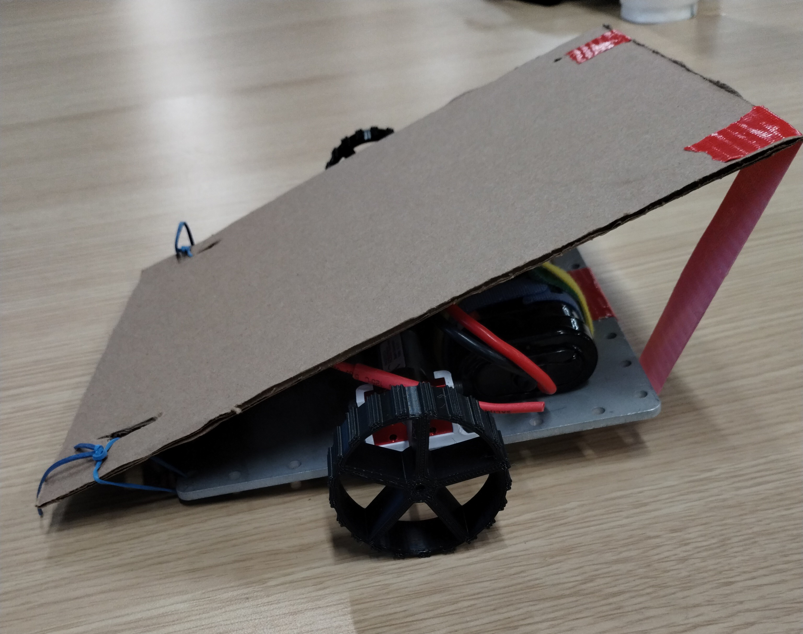

Education & Awards
B.S. in Computer Science — University of Indianapolis (May '26)
GPA: 3.4
Highlights

Bio Punch Card System

TOPO Tooth
Electron Movement (Independent Study)

iD Tech STEM Instructor

196 Team Robot